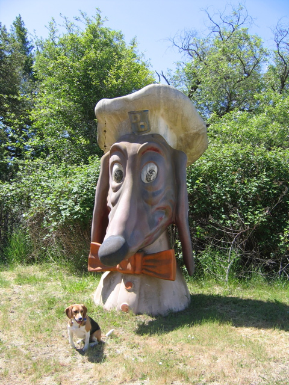

<--Previous Up Next-->

Doggie Diner head
This head, Huxley's fifth (longtime fans have already seen him with the one permanently installed near the San Francisco Zoo and a set of three that appeared at the old Mission Flea Market), guards the entrance to The Other Place. We chatted with the man who's going to restore it; the man who designed the Doggie Diner heads will visit to consult on the correct colors.